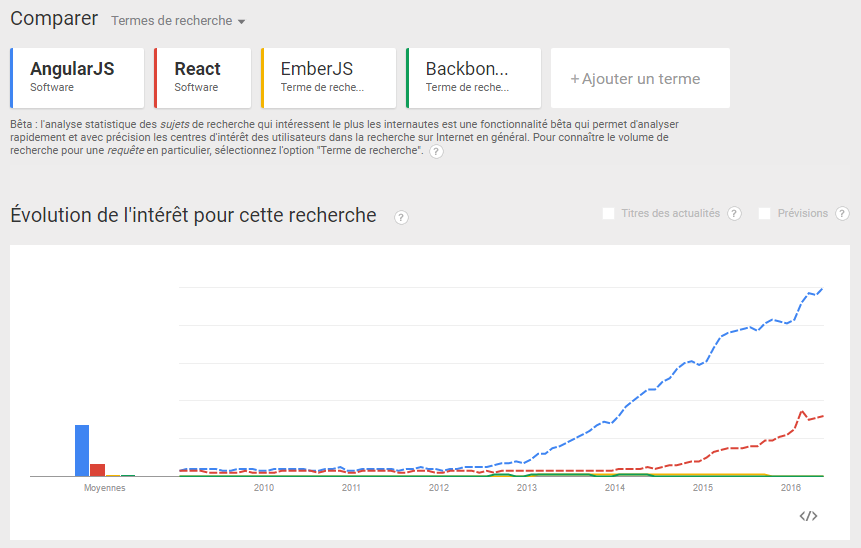

Welcome !
I have nothing to offer but blood, toil, tears, and sweat.
W. Churchill, 13 mai 1940
Evolution of Web Apps
https://evolution-of-apps.firebaseapp.comDavid East - Firebase & Angular team
So... Angular !
En 4 mots clés
- Framework Javascript
- SPA
- MVW (o_O)
Au sujet de MVC / MVVM :
Aujourd'hui, version 1.X - https://angularjs.org/
Demain, version 2.X - https://angular.io/
AngularJS however is not an example of developers maintaining backwards compatibility. It takes pleasure in starting over. In fact, you can just about rip up your old Angular apps now. It’s for your own good.
La classe non ?
Ready for roller coasters ?

Sans Angular...
<html>
<head>
Index
</head>
<body>
Name:
Hello !
</body>
</html>
Avec Angular !
<html>
<head>
Index
</head>
<body ng-app="monApplicationAngular">
Name:
Hello {{ nameModel }} !
</body>
</html>
<html>
<head>
Index
</head>
<body ng-app="monApplicationAngular">
Name:
Hello {{ nameModel }} !
</body>
</html>
- ng-app : directive de bootstrap ("démarrage"), indique à angular où se situe l'application dans la page HTML.
- ng-model : directive qui associe ("bind") la valeur d'un champ à une variable.
- {{ nameModel }} : expression angular, elle est évaluée par angular et son résultat est inséré dans la page.
<demo />
Les modules
<body ng-app="monApplicationAngular">La valeur passée à ngApp est le nom du module principal de l'application.
Un module contient les composants de notre application : controllers, directives, services, filtres...
Pour pouvoir ajouter ces composants, il faut déclarer le module côté javascript :
var app = angular.module("monApplicationAngular", [
"ngRoute",
"ngResource",
//...
]);
// Dans sa forme la plus simple :
// var app = angular.module("monApplicationAngular", []);
Une fois déclaré, on peut l'appeler et lier des composants :
angular
.module("monApplicationAngular")
.directive("uneDirective", maDirective);
function maDirective() {
//...
}
Les expressions Angular
<body ng-app="monApplicationAngular">
1 + 2 = {{ 1 + 2 }}
Nom de l'utilisateur : {{ user.name }}
Loisir n° 3 de l'utilisateur : {{ user.loisirs[2] }}
</body>
Comment et où déclarer user ?
=> Dans le scope
Les controllers
C'est là que l'on modifie le scope
angular
.module("monApplicationAngular")
.controller("HomeController", HomeController);
function HomeController() {
var vm = this; // vm pour ViewModel
vm.user = {
name: "Pierric",
loisirs: ['ski', 'lecture', 'musique']
}
}
Tout ce qui est dans le this de HomeController est lié au scope associé au controller
Il faut penser à déclarer le controller dans le HTML grâce à la directive ngController
<body ng-app="monApplicationAngular">
Nom de l'utilisateur : {{ home.user.name }}
Loisir n° 3 de l'utilisateur : {{ home.user.loisirs[2] }}
</body>
Ici on utilise la syntaxe controllerAs, en spécifiant un alias pour notre controller, ici home
$scope
Dans le javascript, on aurait pu aussi lier le modèle à $scope directement, sans utiliser la syntaxe controllerAs :
function HomeController($scope) {
$scope.user = {
name: "Pierric",
loisirs: ['ski', 'lecture', 'musique']
}
}
Côté HTML :
Nom de l'utilisateur : {{ user.name }}
Loisir n° 3 de l'utilisateur : {{ user.loisirs[2] }}
Les limites de $scope
{{ title }}
{{ title }}
{{ title }}
On préfèrera limiter $scope à l'utilisation de méthodes qui en dépendent telles que $watch, $on ou $broadcast
function HomeController($scope) {
var vm = this;
vm.username = "Pierric";
$scope.$on('someEventFiredFromElsewhere', function (event, data) {
// do something!
});
}
<demo />
Les directives
ngApp, ngController, ngModel, ... sont des directives
Ce sont des marqueurs positionnés sur des éléments du DOM qui indiquent à angular quel comportement attacher à un élément et/ou quelle transformation y apporter
De nombreuses directives sont intégrées nativement : https://code.angularjs.org/1.3.14/docs/api/ng/directive
Directives de template
-
ngIf : insère ou pas un élément dans le DOM en fonction de la valeur de l'attribut
I'm gonna disappear
-
ngRepeat : permet de parcourir les éléments d'un tableau et d'afficher leur valeur
{{ user.name }}
-
ngSwitch : modifie le contenu d'un élément suivant la valeur d'une expression
Name : {{ user.name }}
Directives de style
-
ngShow / ngHide : modifie la visibilité d'un élément du DOM suivant la valeur de l'expression en paramètre
Hello hideHello show
-
ngClass : conditionne dynamiquement les classes d'un élément du DOM suivant la valeur d'expressions
Map Syntax Example
-
ngDisabled : modifie la valeur de l'attribut disabled suivant l'expression spécifiée
Directives d'action
<demo />
Les Filtres
Les filtres permettent de formatter et de... filtrer (!) les expressions auxquelles ils sont appliqués :
{{ expression | filter }}
{{ expression | filter1 | filter2 }}
{{ expression | filter:arg1:arg2 }}
Exemples :
{{ 'Mon texte' | uppercase }}
{{ '25.465' | number:2 | currency:'$'}}
Liste des filtres natifs :
https://docs.angularjs.org/api/ng/filter
Soit le tableau suivant dans un controller:
var jb = {name: 'JB', gender: 'male'},
cyril = {name: 'Cyril', gender: 'male', birth: '1990-11-25'},
agnes = {name: 'Agnes', gender: 'female', birth: '1991-07-22'},
cedric = {name: 'Cedric', gender: 'male', birth: '1992-02-22'};
vm.ninjas = [jb, cyril, agnes, cedric];
Avec le HTML suivant :
{{ ninjas | orderBy:'name' | limitTo:2 }}
{{ ninja.birth | date:'yyyy' }}
On obtiendra :
[
{"name":"Agnes","gender":"female","birth":"1990-07-22"},
{"name":"Cedric","gender":"male","birth":"1990-02-22"}
]
1990
1991
1992
Le filtre Filter
filter permet d'appliquer un filtre personnalisé aux éléments d'un tableau
Name Birth date
{{ friend.name }}
{{ friend.birth | date:'dd/MM/yyyy' }}
Name Gender
{{ ninja.name }}
{{ ninja.gender }}
<demo />
Time for practice !
Learn AngularJS | Codecademy - Unit 1
Shaping up with AngularJS | CodeSchool - Levels 1 / 2 / 3
Créer ses directives
L'avenir du web est aux Web Components : découpage des fonctionnalités en modules réutilisables indépendamment.
Les directives sont un avant-goût et permettent d'implémenter une partie de cette logique.
{{ book.title }}
{{ book.author }}
{{ book.extract }}
peut devenir :
Fichier bookDetails.directive.js :
angular.module('myApp')
.directive('bookDetails', bookDetails); // camelCase côté JS !
function bookDetails() {
return { // Une directive retourne un objet de "configuration"
restrict: 'E', // La directive doit être appelée sous forme d'élément
scope: { // On crée un nouveau scope isolé propre à la directive
book: '=' // On récupère l'objet passé à l'attribut correspondant
},
templateUrl: 'bookDetails.tpl.html', // Indique où aller chercher le HTML
};
}
Fichier bookDetails.tpl.html :
{{ book.title }}
{{ book.author }}
{{ book.extract }}
- restrict : indique comment doit être appelée la directive dans le HTML - A pour attribut, E pour élement et C pour classe CSS. On peut les combiner, par exemple 'AEC'.
- scope : crée un scope isolé pour la directive. On récupère les éléments du scope englobant via les attributs. '@' pour passer une valeur (chaîne de caractères), '=' pour du two-way binding sur un objet.
- controller : une directive peut avoir son propre controller.
- controllerAs : permet de spécifier un alias pour le controller, comme avec ng-controller = ... as ...
-
bindToController : indissociable de ControllerAs, lie les propriétés au controller plutôt qu'au scope.
... controller: function () { var vm = this; vm.selectBook = function () { ... } }, controllerAs: 'bookDetails', bindToController: true ...
<demo />
Time for practice !
Learn AngularJS | Codecademy - Unit 2
Shaping up with AngularJS | CodeSchool - Level 4
Les services
Les services sont des objets dans lesquels on met le code correspondant à la logique métier de l'application. Ils sont aussi utilisés pour organiser le code partagé de l'application.
Les services sont :
- Lazy : paresseux, ils ne sont instanciés que lorsque l'application en a besoin
- Singletons : ils seront instanciés une seule fois et cette instance est ensuite utilisée partout
Les services natifs
-
$http : permet de faire simplement des requêtes AJAX. Renvoie une promise avec une callback de succès et une autre d'échec.
$http({method: 'GET', url: '/serverUrl'}) .success(function(data, status, headers, config){ ... }) .error(function(data, status, headers, config){ ... }); -
$resource : service plus haut niveau, utilisé pour interagir avec des API REST. Nécessite le module ngResource.
{ 'get': {method:'GET'}, 'save': {method:'POST'}, 'query': {method:'GET', isArray:true}, 'remove': {method:'DELETE'}, 'delete': {method:'DELETE'} };var Poneys = $resource('/races/:raceId/poneys/:poneyId', { raceId: 24, poneyId: '@id'}, { run: { method: 'PUT' }}); var fury = Poneys.save({ name: 'Fury Red'});
-
$location : rend accessible l'URL de la page actuelle à notre application et expose plusieurs méthodes.
// avec l'url http://example.com/#/some/path?foo=bar&baz=xoxo var path = $location.path(); // => "/some/path" var searchObject = $location.search(); // => {foo: 'bar', baz: 'xoxo'} -
$timeout / $interval : permettent de wrapper setTimeout et setInterval dans le cycle de vie de l'application angular.
var delayedFn = $timeout(function(){ ... }, 1000) // Après 1 seconde. var recurringFn = $interval(function(){ ... }, 1000, 0) // Chaque seconde.
Autres wrappers ($window, $document...) et services natifs : https://docs.angularjs.org/api/ng/service
Les Promises
Nouveauté de l'EcmaScript 6, implémentée via le service $q.
Utilisée lors de traitements asynchrones tels que les requêtes AJAX avec $http.
Une promise peut avoir deux résultats : succès ou échec.
$http.get(...)
.then(function(data){
// succès, promise résolue
}, function(error){
// erreur, promise rejetée
});
$q
function asyncGreet(name) {
var deferred = $q.defer(); // On crée un objet deferred
$timeout(function() { // Ici on crée artificiellement un délai
deferred.notify('About to greet ' + name + '.');
if (okToGreet(name)) {
deferred.resolve('Hello, ' + name + '!'); // succès
} else {
deferred.reject('Greeting ' + name + ' is not allowed.'); // échec
}
}, 1000);
return deferred.promise; // On retourne la promise de deferred
}
var promise = asyncGreet('Robin Hood'); // La fonction retourne une promise
promise.then(function(greeting) {
alert('Success: ' + greeting); // En cas de succès
}, function(reason) {
alert('Failed: ' + reason); // En cas d'échec
}, function(update) {
alert('Got notification: ' + update); // Indication de progression
});
<demo />
L'injection de dépendance (DI)
Pour pouvoir utiliser un composant dans un autre, angular utilise un système d'injection de dépendance.
function HomeController($scope, $http) { ... }
// function HomeController($http, $scope) { ... } // équivalent !
HomeController.toString(); // "function HomeController($scope, $http) { ... }"Pour éviter les problèmes en cas de minification du javascript, on "annote" les composants :
HomeController.$inject = ['$scope', '$http'];
function HomeController($scope, $http) { ... } // Cette fois l'ordre importe !
Time for practice !
Learn AngularJS | Codecademy - Unit 3
Shaping up with AngularJS | CodeSchool - Level 5
ngRoute
ngRoute est le module angular de base chargé du routage.
Il est composé d'une directive ngView, d'un $routeProvider et de 2 services : $route et $routeParams.
ngView indique quelle partie de la SPA sera mise à jour :
$routeProvider
$routeProvider permet de déterminer les routes de l'application et de faire le lien entre URL, template et controller.
angular
.module("monApplicationAngular")
.config(configure);
function configure($routeProvider) {
$routeProvider
.when('/races/:raceId?', { // raceId est un paramètre facultatif
templateUrl: 'races.html',
controller: RacesController // Remplace ng-controller="..."
})
.when('/', {
templateUrl: 'poneys.html',
controller: PoneysController
controllerAs: 'poneys' // Remplace ng-controller="... as ..."
})
.otherwise('/'); // Si l'url ne correspond pas, redirection
}
$routeParams
Service permettant de déterminer les paramètres de la route. Combinaison de $location.search() et $location.path().
// Avec une url = http://www.example.com/#/races/13?poney=10
$routeParams ==> { raceId: "13", poney: "10" }
Time for practice !
Learn AngularJS | Codecademy - Units 4 / 5
Ressources utiles
- Le guide du développeur
- Devenez un ninja avec AngularJS - ebook - [fr]
- 2 formations vidéos chez video2brain - [fr]
- Formation vidéo AngularJS par @grafikart_fr - [fr]
- Le guide de style Angular par @john_papa - [fr]
- Une réintroduction à Javascript sur MDN - [fr]